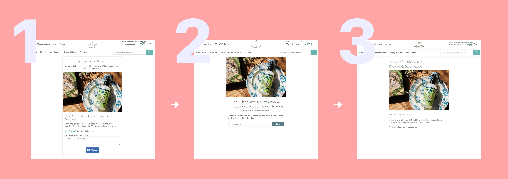
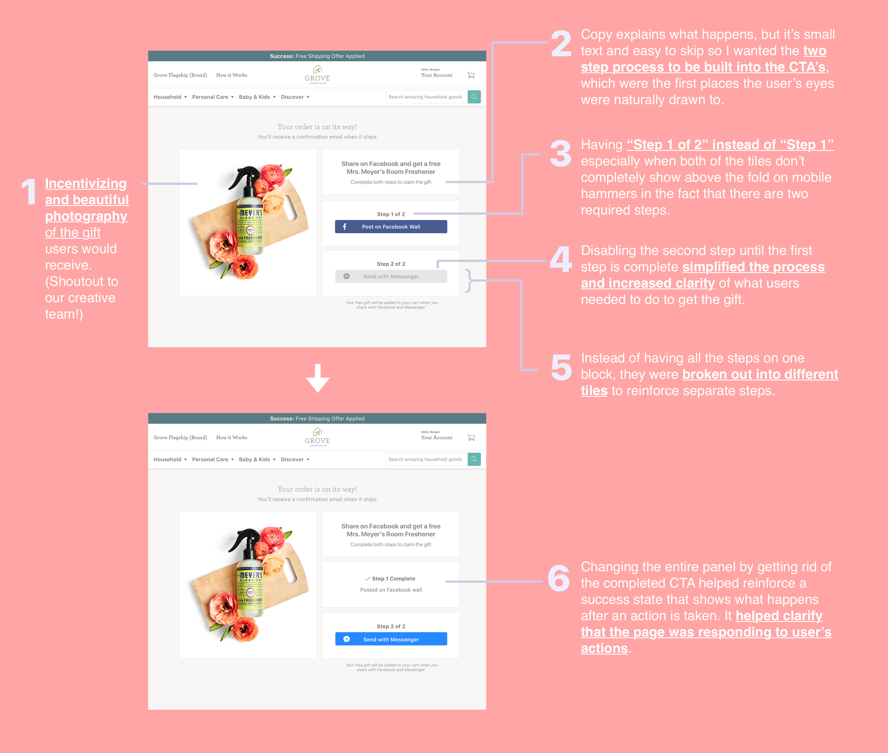
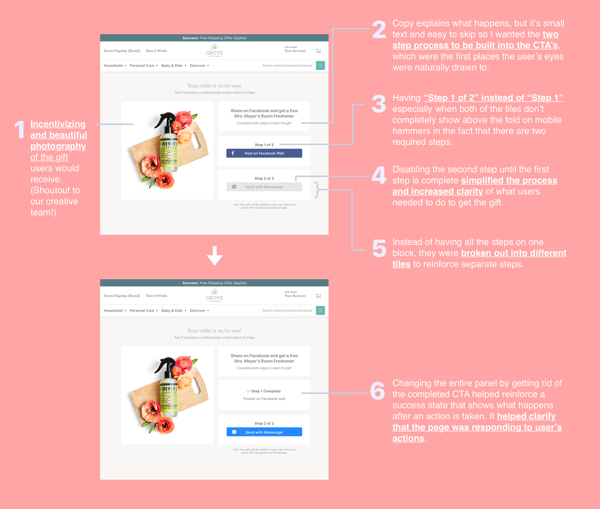

Grove
I redesigned a referral flow for Grove.

Grove Collaborative
I redesigned a post-checkout referral flow that quadrupled page conversion and increase site traffic from referrals by over 50%.
Role
Product Designer
Timeline
March - April 2018
Kudos
Chris Cichon (senior marketing manager)
Allison Fleming (creative director)
Willis Jackson (product manager)
Eric Koo (data analyst)
Allison Fleming (creative director)
Willis Jackson (product manager)
Eric Koo (data analyst)
Role
Product Designer
Timeline
Dec 2017 - March 2018
At Grove, I came away with the skills to work with a highly interdisciplinary team. I learned to talk data, work with different stakeholders, delicately balance business goals and engineering constraints, while prioritizing the user’s experience.
How might we use clarity and transparency to help us achieve our business goals?
Grove is a green eCommerce service that sells natural home products in recurring, editable shipments.
I was tasked with redesigning a referral flow that required users to share on their Facebook wall and send a link through Facebook Messenger in order to get a gift that shipped with their next shipment.

What the original flow looked like.
Design goal: no user guesswork.
The design goal was to make the referral flow behave exactly as users expect. Given the business constraint of requiring users to complete 2 steps to receive a gift they weren't going to get immediately, I wanted to make it extremely clear what users should expect in each step of the process.
Did someone say design process?
IDEATE

I fleshed out as many different exploratory versions as possible to gather different ideas before settling on a solution. Here are some of the ideas!
Something's off if a user goes, "Hey! That's sneaky!" during usability testing.
USABILITY TESTS
The quote above, based on a true story, came from one of three rounds of usability tests with 14 people.
Users were used to only needing to complete one type of sharing on social media from other companies' referral experiences. Given that we were requiring something different, we had to be extra clear that they had to complete two steps and always feel there was a clear call to action on the page.
THEN CONVERGE


This is part of the mocks that we landed on based on 3 rounds of usability tests on 14 people. You could check it out live at grove.co/referral/share
Results.
The number of people who completed the referral flow requiring two steps increased by at least 400%, and the number of people who visit the page from referrals increased by 59%.
I learned a lot so bear with me.
Data-informed design is tricky. Submitting design decisions to data is just step 1 of the process. Using correctly interpreted data is step 2.
Quantitative data is not more important than qualitative data, and vice versa. The misconception I faced was that qualitative data is subjective, and the bigger the sample size the better.
This process has shown me that both qualitative and quantitative data if interpreted without each other end up producing subjective insights. Isolated data (meaning one or the other) could always be interpreted in many ways. The most objective insights are found when qualitative and quantitative data are used to interpret each other.
(Also, customer service knows everything. That awesome team was my first stop, go-to for investigating usability issues.)